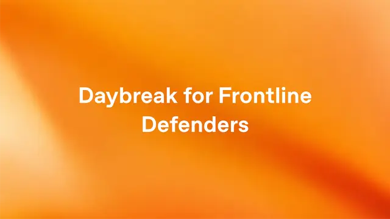

OpenAI / 安全・社会
OpenAI、重要インフラ防衛へ10億ドル 「Daybreak」でAIサイバー防御を前線へ

OpenAIは2026年9月3日、重要サービスを守るサイバー防衛担当者を支援する世界規模の新構想「Daybreak for Frontline Defenders」を発表しました。Daybreakへの補助付きアクセス、訓練、技術支援、パートナー連携に総額10億ドルを投入し、電力、水道、自治体、金融など、社会基盤を支える組織へ高度なAI防御能力を広げます。
QUICK READ
この記事の要点
10億ドルを「防御側のAI能力」に投入
OpenAIはまず米国を中心に、今後6カ月間で10億ドル相当のDaybreakアクセスを提供する方針です。 優先対象には、水道・下水処理事業者、電力網運営者、州・地方自治体、地域銀行、非営利組織、オープンソース保守担当者などが含まれます。大企業ほど潤沢なセキュリティ予算や専門人材を持たない一方、社会への影響が極めて大きい組織を支援する狙いです。 Daybreakでは、レガシーコードのレビュー、不審な挙動の分析、脆弱性の特定と検証、リスクの優先順位付け、修正コードの作成・テストなどにAIを活用できます。
「Blue」と「Red」で防御業務を分離
Daybreakは、認証された官民組織が高度なAIを正当なサイバー防御目的で利用する仕組みです。 「Daybreak Blue」はOpenAIの主要モデルを使い、一般的な防御業務を支援します。一方「Daybreak Red」は、より高度で機微なサイバー作業向けに、承認された組織へ専用モデルへのアクセスを提供します。 すでに約2,000の承認済み組織・ワークスペースで数千人の防衛担当者が利用しており、サイバーセキュリティ企業、防衛組織、法執行機関などへ展開されています。
MS-ISACと自治体・水道向けパイロット
今回の重要な柱が、Multi-State Information Sharing and Analysis Centerとの新たなパイロットです。 州、地方自治体、部族、準州、水道事業者などを対象に、Daybreakの利用環境だけでなく、訓練や実践的な技術支援も提供します。AIが発見した問題を人間が検証し、優先順位を決め、修復までつなげる再現可能な運用モデルの構築を目指します。 さらに「Daybreak Defense Network」では、35以上のパートナー製品・運用サービスを通じて、既存の企業向けセキュリティツールやワークフローへDaybreakモデルを組み込む計画です。
Discord掲載記事からの抜粋です。詳細・文脈は全文と出典をご確認ください。
出典・参考リンク
日付はAFNJPへの掲載日です。発表元の公開日とは異なる場合があります。